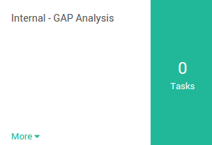
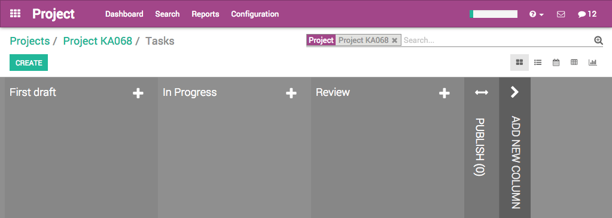

Overview
Odoo Project allows you to manage a project together with your whole team, and to communicate with any member for each project and task.
It works with projects containing tasks following customizable stages. A project can be internal or customer-oriented. A task is something to perform as part of a project. You will be able to give different tasks to several employees working on this project.
Installing the Project module
Open the Apps module, search for Project Management, and click on Install.

Creating a new project
Open the Project application, and click on Create. From this window, you can specify the name of the project and set up the privacy of the project.
The privacy setting works as:
- Customer Project: visible in portal if the customer is a follower.
- All Employees: employees see all tasks or issues.
- Private Project: followers can see only the followed tasks or issues
You can also specify if the project is destined to a customer, or leave the Customer field empty if not.

When you have entered all the required details, click on Save.
Manage your project's stages
Add your project's stages
On your project's dashboard. Click on # Tasks.
In the new window, add a new column and name it according to the first stage of your project, then add as many columns as there are stages in your project.
For each stage, there are markers for the status of tasks within a stage, that you can personalize to fit your needs.
Drag your mouse pointer over a stage name, and click on the appearing bearing, and on the opening menu, click on Edit.

A new window will open. The color dots and star icon correspond to customizable markers applied on tasks, making it easier to know what task requires attention. You can give them any signification you like.

Click on Save when you are done.
Rearrange stages
You can easily personalize this view to better suit your business needs by creating new columns. From the Kanban view of your project, you can add stages by clicking on Add new column. If you want to rearrange the order of your stages, you can easily do so by dragging and dropping the column you want to move to the desired location. You can also fold or unfold your stages by using the Setting icon on your desired stage.